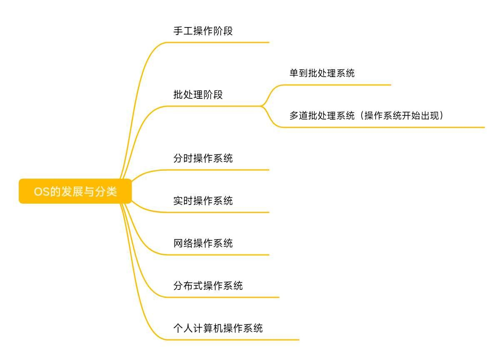
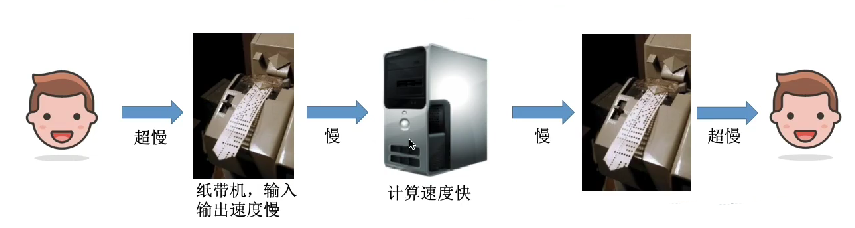

操作系统的发展与分类
对《操作系统》的知识梳理 三
零、总览
一、手工操作阶段
过程：用户把程序写在纸带上(其实就是在纸带上打孔)，然后输入到计算机中，计算机随后会处理这个程序，把输出结果又放在纸带中(其实还是打孔)，展示给用户看。
 由于用户在纸带上编写程序的速度很慢，纸带输入输出的速度也很慢，而计算机的处理速度快，所以系统资源的利用率极低。
主要缺点：用户独占全机，人机速度矛盾导致系统资源利用率极低。
二、批处理阶段
1.单道批处理系统
单道批处理系统引入了脱机输入/输出技术(用磁带完成)，但是每次只能往内存中输入一道程序，监督程序(这是操作系统的雏形)负责控制程序的输入输出。
过程：多个用户把程序写在纸带上，然后通过外围机录入到磁带中，监督程序会控制程序的输入和输出，每次只允许计算机内存中存在一道用户程序。
主要优点: 缓和了一定程度的人机速度矛盾，资源利用率有所提升。
主要缺点: 内存中仅能有一道用户程序运行，只有该程序运行结束后才能调入下一道程序，CPU有大量的空闲时间是在等待I/O完成，资源利用率依然很低。
2.多道批处理系统（操作系统正式诞生）
每次往计算机内存中输入多道程序，并引入了中断技术，由操作系统负责管理这些程序的并发运行。
过程：和单道批处理系统差不多，只不过是可以向计算机内存中调入多道程序，让他们在计算机内存中并发运行。
主要优点：多道程序并发运行，共享计算机资源，资源利用率大幅提升，CPU和其他资源保存”忙碌”状态的时间增长。
主要缺点：用户响应时间长，没有人机交互功能(用户提交自己的作业之后只能等待计算机处理完成，中间不能控制自己作业的执行)
三、分时操作系统
计算机以时间片为单位轮流为各个用户/作业服务，各个用户可通过终端与计算机进行交互。
主要优点：用户请求可以被及时响应，解决了人机交互问题。允许多个用户同时使用一台计算机，并且用户对计算机的操作相互独立，感受不到别人的存在。
主要缺点：不能优先处理一些紧急任务。操作系统对各个用户/作业都是完全公平的，循环地为每个用户/作业服务一个时间片，不区分任务的紧急性。
四、实时操作系统
主要优点：能够优先响应一些紧急任务，某些紧急任务不需要时间片排队。
在实时操作系统的控制下，计算机系统接收到外部信号后及时进行处理，并且要在严格的时限内处理完事件。实时操作系统的主要特点是及时性和可靠性。
1.硬实时系统
指必须在绝对严格的规定时间内完成处理，如导弹控制系统、自动驾驶系统。
2.软实时系统
指能接受偶尔违反时间规定，如12306火车订票系统。
五、其他几种操作系统
1.网络操作系统：
是伴随着计算机网络的发展而诞生的，能把网络中各个计算机有机地结合起来，实现数据传送等功能，实现网络中各种资源的共享（如文件共享）和各种计算机之间的通信。（如：Windows NT就是一种典型的网络操作系统，网站服务器就可以使用）
2.分布式操作系统：
主要特点是分布性和并行性。系统中的各台计算机地位相同，任何工作都可以分布在这些计算机上，由它们并行、协同地完成这个任务。
3.个人计算机操作系统：
如Windows XP、MacOS，方便个人使用。
六、总结